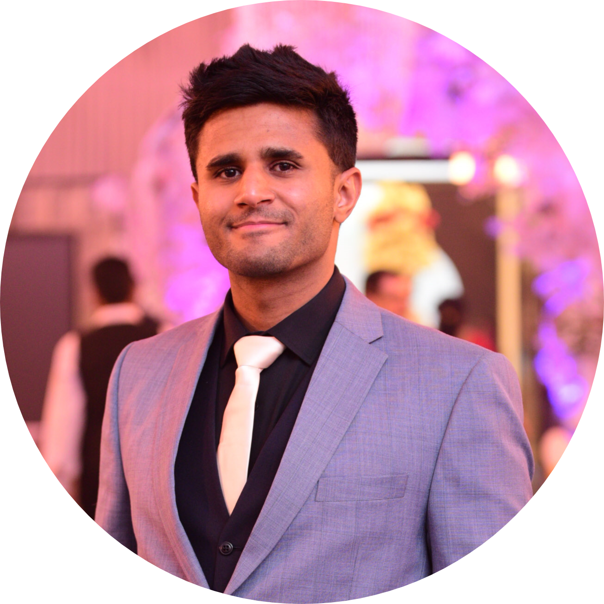

|  | Naveed MaqboolFounder of Spark Academy LinkedIn Profile My Hobbies Contact meI am an enthusiastic, goal orientated Engineer and Teacher. I have a passion for learning and sharing knowledge. My Engineering major and working 4 years as a Teacher full and part time in both one-on-one and classroom based scenarios, Language collaboration boot camps and volunteering in outreach programs in Cape Town, South Africa has given me the critical analytical tools to assess the learners ability, their style of learning and motivating factors to fully tweak their inner potential. |
| Language Skills | |||
|---|---|---|---|
| Japanese | ⭐⭐⭐✰✰ | Urdu | ⭐⭐⭐⭐✰ |
| English | ⭐⭐⭐⭐✰ | Chinese | ⭐✰✰✰✰ |
| Dates | Work |
|---|---|
May 2020 - December 2020 |
Teaching Certification - District of Colombia, USA |
March 2019 - March 2020 | Laurus International School of Science Homeroom teacher - K2 Afterschool teacher, Saturday school teacher |